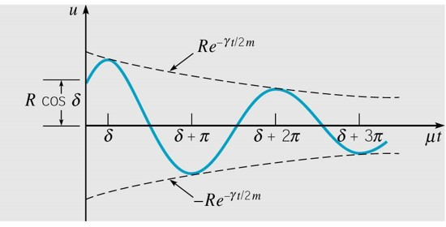

Section 3.7 Harmonic oscillations
We'll now take a closer look at the model that motivated our study of second order equations with constant coefficients - harmonic oscillators. The simplest example of a harmonic oscillator are the motions of a spring-mass system.
Subsection 3.7.1 Mass-spring systems
Suppose a mass \(m\) hangs from a vertical spring of original length \(l\text{.}\)
We will study the motion of a mass when it is acted on by an external force (forcing function) and/or is initially displaced. Let \(u(t)=\)displacement of the mass from its equilibrium position at time \(t\text{.}\) The motion of the mass \(u(t)\) is modeled by the following:
where \(m,\gamma,k\) are positive.
The specific constants depend on the measurement system in use. \(m\) is found from \(w=mg\text{.}\) \(\gamma\) is given in units of \(\frac{\text{weight unit} \cdot s}{\text{distance unit}}\text{.}\) \(k\) is found using Hooke's Law, \(mg=kL\text{.}\)
Example 3.7.1.
A \(4\) lb mass stretches a spring \(2\) inches. The mass is displaced an additional 6 in. and then released; and is in a medium that exerts a viscous resistance of \(6\) lb when the mass has a velocity of \(3\) ft/sec. Formulate the IVP that governs the motion of this mass.
Solution:
Find \(m\text{:}\) \(w=mg\) which implies
Find \(\gamma\text{:}\) Using \(\gamma u^{\prime}=6\) lb we have
Find \(k\text{:}\) (Hooke's Law)
Thus
hence
since \(u(0)=6\text{in }\frac{1\text{ft}}{12\text{in}}=\frac{1}{2}\text{.}\)
Solving this
Definition 3.7.2.
When
then \(\omega_{0}=\) is the natural frequency of the system.
Subsection 3.7.2 Derivation of the mass/spring Differential Equation
To see how the differential equation that models the behavior of a mass-spring system is derived, we will recall some basic facts from Physics. Using Newton's Second Law:
where \(f\) is the net force acting on the mass.
The forces are:
Weight: \(w=mg\) (a downward force).
Spring force: \(F_{s}=-k\left(L+u(t)\right)\) (either up or down force).
Damping force: \(F_{d}(t)=-\gamma u^{\prime}(t)\) (either up or down), which may be due to air resistance, friction, machanical device. It acts in the opposite direction as the motion of the mass.
External force: \(F(t)\) (either an up or down).
Putting it all together
which using \(mg=kL\) (from Hooke's Law) and simplifying we have
where \(m,\gamma,k\) are positive.
Subsection 3.7.3 Undamped harmonic oscillator
When the damping coefficient \(\gamma=0\) (nothing stopping it from oscillating forever), we have
so that \(mr^{2}+k=0\) gives \(r=\pm i\sqrt{\frac{k}{m}}.\)This is a special number, so we'll denote it \(\omega_{0}=\sqrt{\frac{k}{m}}.\) We get
with period \(\frac{2\pi}{\omega}\) and the natural frequency of the system is \(\omega_{0}\text{.}\)
Subsection 3.7.4 Damped harmonic oscillator:
A damper is an applied force that resists velocity (that is, the damping force is always opposite the direction of motion). A common way to model a damping force is as proportional to the velocity \(u'(t)\text{.}\) When damped, the model equation becomes
In general we'll have the following characteristic equation
and solving for the roots we get
Subsection 3.7.5 Types of oscillating systems
Different types of behavior are possible depending on the value of \(b^{2}-4mk\text{.}\) We'll classify the possible cases in the following way:
-
If \(\gamma=0\text{,}\)
- the oscillator is undamped.
- Mass oscillates forever
- The natural period is \(2\pi\sqrt{\frac{m}{k}}\text{.}\)
-
If \(\gamma>0\) and \(\gamma^{2}-4km\lt0\) (which happens when the roots are \(r=\alpha\pm\beta i\))
- The oscillator is underdamped. The mass oscillates back and forth as it tends to its rest position. The solutions are\begin{equation*} u=Re^{-\gamma t/(2m)}\cos\left(\mu t-\delta\right) \end{equation*}and \(u\) is bounded between \(\pm Re^{-\gamma t/(2m)}\text{.}\)
- 
- The oscillator is underdamped. The mass oscillates back and forth as it tends to its rest position. The solutions are
-
If \(\gamma>0\) and \(\gamma^{2}-4km>0\) (which happens when there are two distinct \(r_{1},r_{2}\)):
- The oscillator is overdamped. The mass tends to its rest position but does not oscillate.
- The solutions are\begin{equation*} u=c_{1}e^{r_{1}t}+c_{2}e^{r_{2}t},\,\,\,r_{1},r_{2}\lt0 \end{equation*}
-
If \(\gamma>0\) and \(\gamma^{2}-4km=0\) (which happens when there is one negative \(r\)):
- The oscillator is critically damped. The mass tends to its rest position but does not oscillate.
- Solutions tend to the origin tangent to the unique line of eigenvectors.
- The solutions are\begin{equation*} u=c_{1}e^{-\gamma t/(2m)}+c_{2}te^{-\gamma t/(2m)} \end{equation*}
The image below illustrates the behavior possible in different cases. Underdamped is in blue, overdamped in green, and critically damped in red and black.
Subsection 3.7.6 Electric Circuts
The flow of electric charge in certain basic electrical circuits (RLC for resistor (R), inductor (L), capacitor (C)) is modeled by second order linear ODEs with constant coefficients:
where \(Q=\) charge (coulombs).